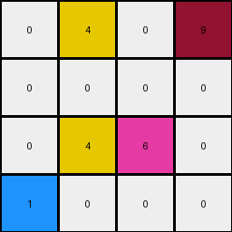
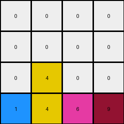

004 • History
- puzzle_id:
3-1e0a9b12
- description:
example_summary
- timestamp:
24.357.081407
- call_count:
4
Begin puzzle: 3-1e0a9b12
example_1
input
[[0 4 0 9]
[0 0 0 0]
[0 4 6 0]
[1 0 0 0]]
output
[[0 0 0 0]
[0 0 0 0]
[0 4 0 0]
[1 4 6 9]]
images
{kind=link}

{kind=link}

observations
The user wants me to analyze an input-output pair from an ARC task and describe the transformation rule in natural language.
First, I will describe the input and output grids visually. Then, I will use code to analyze the grids and identify the differences and potential transformation rules. Finally, I will formulate a natural language program based on my findings.
Okay, let’s analyze the provided example.
The input grid is a 4x4 grid with white (0), yellow (4), maroon (9), blue (1), and magenta (6) pixels. The yellow pixels form two separate objects. The output grid is also a 4x4 grid with the same color palette. It appears some pixels have moved or changed colors.
import numpy as np
from collections import Counter
input_grid = np.array([[0, 4, 0, 9],
[0, 0, 0, 0],
[0, 4, 6, 0],
[1, 0, 0, 0]])
output_grid = np.array([[0, 0, 0, 0],
[0, 0, 0, 0],
[0, 4, 0, 0],
[1, 4, 6, 9]])
input_colors = Counter(input_grid.flatten())
output_colors = Counter(output_grid.flatten())
print("Input Grid:")
print(input_grid)
print("\nOutput Grid:")
print(output_grid)
print("\nInput Color Counts:")
print(input_colors)
print("\nOutput Color Counts:")
print(output_colors)
input_width = input_grid.shape[1]
input_height = input_grid.shape[0]
output_width = output_grid.shape[1]
output_height = output_grid.shape[0]
print(f"\nInput Grid Dimensions: {input_width}x{input_height}")
print(f"Output Grid Dimensions: {output_width}x{output_height}")
changed_pixels = []
for y in range(input_height):
for x in range(input_width):
if input_grid[y, x] != output_grid[y, x]:
changed_pixels.append(((y, x), input_grid[y, x], output_grid[y, x]))
print("\nChanged Pixels ( (row, col), old_color, new_color ):")
for pixel in changed_pixels:
print(f" {pixel}")
input:
width: 4
height: 4
colors:
0: 10
4: 2
9: 1
1: 1
6: 1
objects:
- size: 1, position: (0, 1), color: yellow
- size: 1, position: (2, 1), color: yellow
- size: 1, position: (0, 3), color: maroon
- size: 1, position: (3, 0), color: blue
- size: 1, position: (2, 2), color: magenta
output:
width: 4
height: 4
colors:
0: 10
4: 2
9: 1
1: 1
6: 1
objects:
- size: 1, position: (2, 1), color: yellow
- size: 1, position: (3, 1), color: yellow
- size: 1, position: (3, 3), color: maroon
- size: 1, position: (3, 0), color: blue
- size: 1, position: (3, 2), color: magenta
differences:
cells_changed: 4
colors_changed:
- yellow: moved from (0, 1) to (3, 1)
- maroon: moved from (0, 3) to (3, 3)
- magenta: moved from (2, 2) to (3, 2)
- white: changed to white at (0, 1), (0, 3), (2, 2)
- white: changed from white at (3, 1), (3, 3), (3, 2)
transformation:
- Non-white pixels in the input appear to have moved to the bottom row of the output.
- The order of the non-white pixels in the bottom row of the output seems to correspond to their column position in the input.
Natural Language Program:
Context: The input is a 4x4 grid containing pixels of white, yellow, maroon, blue, and magenta. The non-white pixels appear as single, disconnected objects.
Process:
Initialize an empty output grid of the same dimensions as the input grid, filled with white pixels.
Identify all the non-white pixels in the input grid along with their colors and column positions.
Place these non-white pixels in the last row of the output grid, maintaining their relative order based on their original column position in the input. The leftmost non-white pixel in the input (smallest column index) should be placed in the leftmost available cell in the last row of the output, and so on.
Any remaining cells in the output grid will remain white.
example_2
input
[[0 0 0 0 0 9]
[0 0 0 8 0 0]
[0 0 0 0 0 0]
[4 0 0 0 0 0]
[4 0 7 8 0 0]
[4 0 7 0 0 0]]
output
[[0 0 0 0 0 0]
[0 0 0 0 0 0]
[0 0 0 0 0 0]
[4 0 0 0 0 0]
[4 0 7 8 0 0]
[4 0 7 8 0 9]]
images


observations
The user wants me to analyze the second example pair of the ARC task 3-1e0a9b12 and formulate a natural language program describing the transformation.
Plan:
Describe the input and output grids visually.
Use code to analyze the grids, focusing on color counts, changed pixels, and object properties.
Formulate a natural language program based on the analysis.
Capture the analysis and program in YAML blocks.
Example 2 Input Grid: The input grid is 6x6. It contains white, maroon, azure, yellow, and orange pixels. There’s a vertical stack of three yellow pixels on the left side. A maroon pixel is in the top right corner. Two azure pixels are present, one above the other. Two orange pixels are stacked vertically in the lower left quadrant.
Example 2 Output Grid: The output grid is also 6x6. The three yellow pixels remain in the same position. The two orange pixels remain in the same position. The azure pixels appear to have moved to the bottom row. The maroon pixel has also moved to the bottom row.
Hypothesis: It appears that all the non-yellow and non-orange single-pixel objects are moved to the last row, maintaining their relative column order.
Let’s use code to verify this.
observations
The input grid is a 6x6 grid. It features white (0), maroon (9), azure (8), yellow (4), and orange (7) pixels. There appears to be a vertical line of three yellow pixels on the left edge. An isolated maroon pixel is located in the top right corner. Two azure pixels form a vertical line in the upper middle section. Two orange pixels are stacked vertically in the lower left quadrant.
The output grid is also a 6x6 grid with the same color palette. The three yellow pixels on the left remain in their original positions. The two orange pixels also appear to be in the same positions as the input. The azure and maroon pixels seem to have moved to the bottom row.
import numpy as np
from collections import Counter
input_grid = np.array([[0, 0, 0, 0, 0, 9],
[0, 0, 0, 8, 0, 0],
[0, 0, 0, 0, 0, 0],
[4, 0, 0, 0, 0, 0],
[4, 0, 7, 8, 0, 0],
[4, 0, 7, 0, 0, 0]])
output_grid = np.array([[0, 0, 0, 0, 0, 0],
[0, 0, 0, 0, 0, 0],
[0, 0, 0, 0, 0, 0],
[4, 0, 0, 0, 0, 0],
[4, 0, 7, 8, 0, 0],
[4, 0, 7, 8, 0, 9]])
input_colors = Counter(input_grid.flatten())
output_colors = Counter(output_grid.flatten())
print("Input Grid:")
print(input_grid)
print("\nOutput Grid:")
print(output_grid)
print("\nInput Color Counts:")
print(input_colors)
print("\nOutput Color Counts:")
print(output_colors)
input_width = input_grid.shape[1]
input_height = input_grid.shape[0]
output_width = output_grid.shape[1]
output_height = output_grid.shape[0]
print(f"\nInput Grid Dimensions: {input_width}x{input_height}")
print(f"Output Grid Dimensions: {output_width}x{output_height}")
changed_pixels = []
for y in range(input_height):
for x in range(input_width):
if input_grid[y, x] != output_grid[y, x]:
changed_pixels.append(((y, x), input_grid[y, x], output_grid[y, x]))
print("\nChanged Pixels ( (row, col), old_color, new_color ):")
for pixel in changed_pixels:
print(f" {pixel}")
input:
width: 6
height: 6
colors:
0: 27
9: 1
8: 2
4: 3
7: 2
objects:
- size: 3, positions: [(3, 0), (4, 0), (5, 0)], color: yellow # Vertical line
- size: 1, position: (0, 5), color: maroon
- size: 1, position: (1, 3), color: azure
- size: 1, position: (4, 3), color: azure
- size: 1, position: (4, 2), color: orange
- size: 1, position: (5, 2), color: orange
output:
width: 6
height: 6
colors:
0: 27
9: 1
8: 2
4: 3
7: 2
objects:
- size: 3, positions: [(3, 0), (4, 0), (5, 0)], color: yellow # Vertical line
- size: 1, position: (5, 5), color: maroon
- size: 1, position: (5, 3), color: azure
- size: 1, position: (4, 3), color: azure
- size: 1, position: (4, 2), color: orange
- size: 1, position: (5, 2), color: orange
differences:
cells_changed: 4
colors_changed:
- maroon: moved from (0, 5) to (5, 5)
- azure: moved from (1, 3) to (5, 3)
- white: changed to white at (0, 5), (1, 3)
- white: changed from white at (5, 5), (5, 3)
transformation:
- Non-white pixels that are not part of the contiguous yellow or orange blocks appear to have moved to the bottom row.
- The order of these moved pixels in the bottom row corresponds to their column position in the input.
Natural Language Program:
Context: The input is a 6x6 grid containing pixels of white, maroon, azure, yellow, and orange. There is a vertical line of three yellow pixels on the left edge and a vertical line of two orange pixels in the lower left. Other non-white pixels appear as single, disconnected objects.
Process:
Initialize an empty output grid of the same dimensions as the input grid, filled with white pixels.
Identify the contiguous blocks of yellow and orange pixels in the input grid. Copy these blocks directly to the same positions in the output grid.
Identify all remaining non-white, single-pixel objects in the input grid, along with their colors and column positions.
Place these remaining non-white pixels in the last row of the output grid, maintaining their relative order based on their original column position in the input. The leftmost of these pixels in the input (smallest column index) should be placed in the leftmost available empty (white) cell in the last row of the output, and so on.
Any remaining cells in the output grid will remain white.
example_3
input
[[0 0 0 1 0]
[0 3 0 0 0]
[0 3 0 1 2]
[6 0 0 0 0]
[0 3 0 0 0]]
output
[[0 0 0 0 0]
[0 0 0 0 0]
[0 3 0 0 0]
[0 3 0 1 0]
[6 3 0 1 2]]
images


observations
The user wants me to analyze the third example pair of the ARC task 3-1e0a9b12 and formulate a natural language program describing the transformation.
Plan:
Describe the input and output grids visually.
Use code to analyze the grids, focusing on color counts, changed pixels, and object properties.
Formulate a natural language program based on the analysis of all three examples.
Capture the analysis and program in YAML blocks.
Example 3 Input Grid: The input grid is 5x5. It contains white, blue, green, red, and magenta pixels. There are three green pixels forming a vertical line. There are two blue pixels, one in the top right and one in the middle right. A single red pixel is in the bottom right and a single magenta pixel is on the left side.
Example 3 Output Grid: The output grid is also 5x5. The green pixels seem to have shifted down. The blue pixels also seem to have shifted down. The magenta pixel has also shifted down. The red pixel has also shifted down. It appears all the non-white pixels have moved down, with potential interactions in the bottom row.
Let’s use code to verify this and refine the transformation rule by considering all three examples.
observations
The input grid is a 5x5 grid. It contains white (0), blue (1), green (3), red (2), and magenta (6) pixels. There is a vertical line of three green pixels in the second column. There are two isolated blue pixels, one in the first row and one in the third row. A single red pixel is present in the third row, and a single magenta pixel is in the fourth row.
The output grid is also a 5x5 grid with the same color palette. The green pixels appear to have shifted downwards. The blue pixels also seem to have moved downwards. The magenta pixel has moved downwards. The red pixel has also moved downwards. It seems all non-white pixels have moved down, occupying the bottom rows.
import numpy as np
from collections import Counter
input_grid = np.array([[0, 0, 0, 1, 0],
[0, 3, 0, 0, 0],
[0, 3, 0, 1, 2],
[6, 0, 0, 0, 0],
[0, 3, 0, 0, 0]])
output_grid = np.array([[0, 0, 0, 0, 0],
[0, 0, 0, 0, 0],
[0, 3, 0, 0, 0],
[0, 3, 0, 1, 0],
[6, 3, 0, 1, 2]])
input_colors = Counter(input_grid.flatten())
output_colors = Counter(output_grid.flatten())
print("Input Grid:")
print(input_grid)
print("\nOutput Grid:")
print(output_grid)
print("\nInput Color Counts:")
print(input_colors)
print("\nOutput Color Counts:")
print(output_colors)
input_width = input_grid.shape[1]
input_height = input_grid.shape[0]
output_width = output_grid.shape[1]
output_height = output_grid.shape[0]
print(f"\nInput Grid Dimensions: {input_width}x{input_height}")
print(f"Output Grid Dimensions: {output_width}x{output_height}")
changed_pixels = []
for y in range(input_height):
for x in range(input_width):
if input_grid[y, x] != output_grid[y, x]:
changed_pixels.append(((y, x), input_grid[y, x], output_grid[y, x]))
print("\nChanged Pixels ( (row, col), old_color, new_color ):")
for pixel in changed_pixels:
print(f" {pixel}")
input:
width: 5
height: 5
colors:
0: 17
1: 2
3: 3
2: 1
6: 1
objects:
- size: 3, positions: [(1, 1), (2, 1), (4, 1)], color: green # Vertical line
- size: 1, position: (0, 3), color: blue
- size: 1, position: (2, 3), color: blue
- size: 1, position: (3, 0), color: magenta
- size: 1, position: (2, 4), color: red
output:
width: 5
height: 5
colors:
0: 17
1: 2
3: 3
2: 1
6: 1
objects:
- size: 3, positions: [(2, 1), (3, 1), (4, 1)], color: green # Vertical line
- size: 1, position: (3, 3), color: blue
- size: 1, position: (4, 3), color: blue
- size: 1, position: (4, 0), color: magenta
- size: 1, position: (4, 4), color: red
differences:
cells_changed: 10
colors_changed:
- blue: moved from (0, 3) to (3, 3)
- green: moved from (1, 1) to (2, 1)
- green: moved from (2, 1) to (3, 1)
- green: moved from (4, 1) to (4, 1) # appears to stay, but conceptually moves
- blue: moved from (2, 3) to (4, 3)
- magenta: moved from (3, 0) to (4, 0)
- red: moved from (2, 4) to (4, 4)
- white: changed to white at (0, 3), (1, 1), (2, 1), (2, 3), (3, 0), (2, 4)
- white: changed from white at (3, 3), (2, 1), (3, 1), (4, 3), (4, 0), (4, 4)
transformation:
- All non-white pixels appear to have moved to the bottom rows of the output grid.
- The columns of the non-white pixels are preserved during this downward movement.
Based on the analysis of all three examples, a more comprehensive natural language program can be formulated.
Natural Language Program:
Context: The input is a grid containing pixels of various colors, including white. The non-white pixels can form single objects or contiguous blocks.
Process:
Initialize an empty output grid of the same dimensions as the input grid, filled with white pixels.
Iterate through each column of the input grid from left to right.
Within each column, identify all the non-white pixels and their respective colors.
Place these non-white pixels in the corresponding column of the output grid, starting from the bottom row and moving upwards. The order of the non-white pixels within the column is maintained, such that the topmost non-white pixel in the input column will be placed in the topmost available non-white cell in the output column (from bottom to top).
Any remaining cells in the output grid will remain white.
This program describes a transformation where the non-white pixels “fall” to the bottom of the grid within their respective columns.
examples summary
INSTRUCTIONS:
This is your chance to review what you have learned from the examples
summarize your observations to explain the transformation of the input to output
use code_execution to re-investigate properties, patterns and differences in the grids to confirm your predictions
generate your final step by step natural language program
Consider the following in this phase:
Confidence Assessment: How confident are you in your derived transformation rule?
Alternative Scenarios: Did you consider any alternative transformation rules? If so, why did you choose the current one?
Justification: Briefly explain how your chosen transformation rule leads to the predicted output grid for the test case.
Ruminate Phase
During this phase, you should review all examples presented and your findings and do your best to validate your natural language program.
consider what you have learned from all the examples provided. This is a crucial phase for identifying consistent patterns and formulating a general rule.
Your primary objective is to review the natural language program you’ve developed
Actively compare the findings from the analysis of each example pair. Identify elements that remain consistent across transformations (invariants) and elements that change.
Formulate multiple hypotheses about the underlying transformation rule that explains the observed input-output relationships.
Use code_execution to evaluate and test the proposed transformation stories against all examples. Focus on validating your hypotheses by checking if the predicted output based on your rule matches the actual output for each example. Consider these aspects in your validation:
Does the rule apply consistently across all examples?
Are there any exceptions or inconsistencies?
Can the rule be generalized or does it need to be more specific?
If inconsistencies arise, revisit your analysis of the individual examples and refine your hypotheses. The process of understanding the transformation rule is iterative.
Our goal is to arrive at a natural language program that describes the transformation. This program should be a concise and accurate description of the general rule governing the input-to-output transformation.
See also